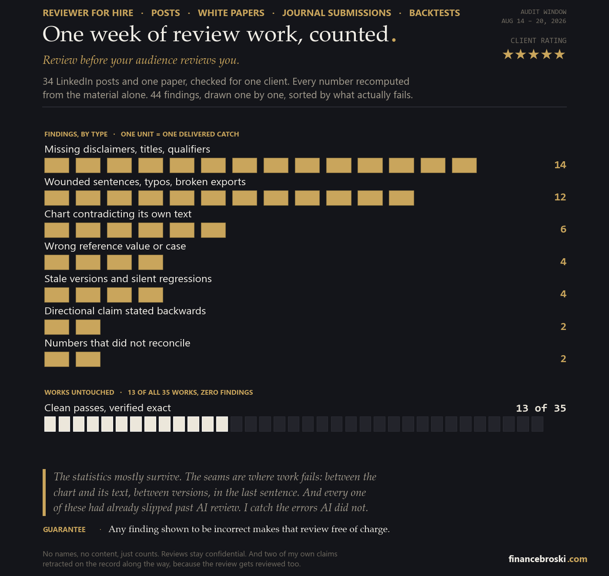

An independent referee for quantitative work: LinkedIn and X posts, white papers, journal submissions, theses, backtests, and the code underneath them. Every number recomputed from the material alone, every chart checked against its own text, citations verified against their sources, findings back in writing, in your register, ready to apply. The errors this catches are the ones that survive AI passes and self-review: the chart that contradicts its own caption, the stale version that undoes last week's fix, the last sentence that lost its ending. The work this method grew on runs graduate to post-doctoral level.
Citation checks ride along free: references verified against their sources, paraphrases checked for honest distance from the original. All reviews and materials remain confidential; only the client decides if anyone ever sees one. Ongoing volume is quoted as a bundle. Independent referee, affiliated with no journal. Not investment advice; I check the artifact, not the strategy.
One client, 35 works, every number recomputed. Counts only; no names, no content.

Email me: ayanjain259@gmail.com → or message me on LinkedIn
Attach the piece or link it; you get a quote before any work starts.